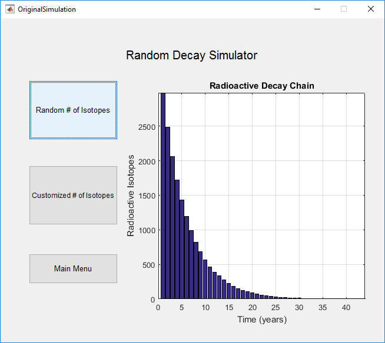
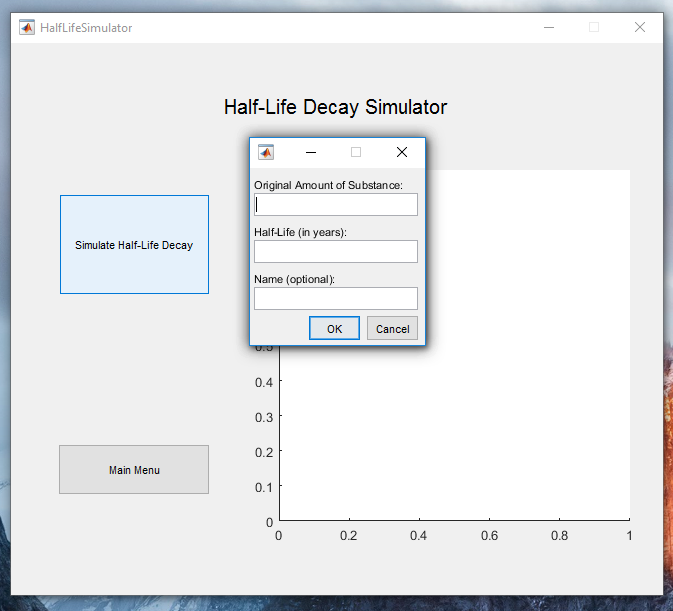
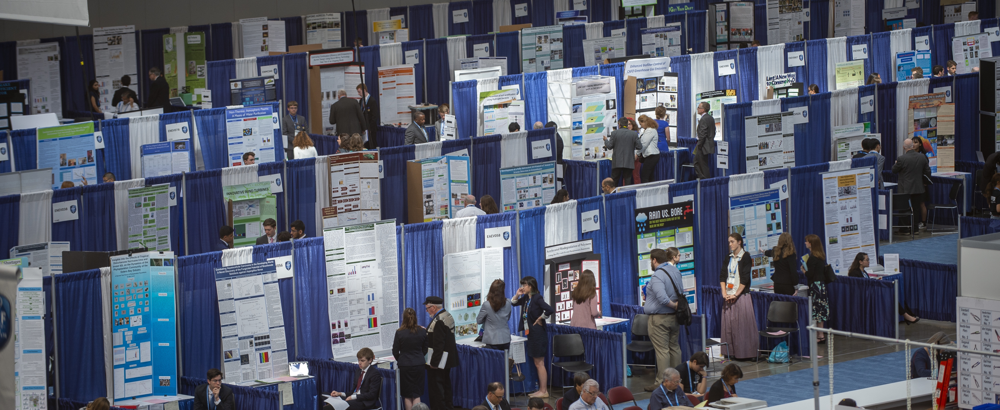

Intel ISEF is the world’s largest international pre-college science competition. The competition featured over 1,800 young scientists selected from 423 affiliate fairs in more than 80 countries, regions and territories.
ISEF 2016 Phoenix, AZ
Simulating the Radioactive Decay Chain Using MATLAB (Project #CBIO026)
I created a simulation of the radioactive decay chain of specific isotopes by using MATLAB random number generators. The simulation works by allowing initial isotopes to a matrix and then setting a randomized number between 1 and 6, inclusive to each cell. When a cell was marked with a 6, the isotope was modeled as “decayed”. During each iteration, the number of remaining isotopes was plotted against the number of iterations. This research project was showcased at the 2016 Intel International Science & Engineering Fair held in Phoenix, Arizona.
Awards
This research project was awarded the Intel Excellence in Computer Science Award.
Gallery

Random Decay Simulation

Custom Simulation

ISEF 2017 Los Angeles, CA
Programmable System for the Extraction of Hydroelectric Energy (Project #EGPH024T)
I led a research project to study the design and feasibility of a novel hydroelectric energy capture concept. The model is based on an adaptation of the Zotlöterer model and includes integrated energy storage and a revolutionary conical frustum shape. Water enters through the upper portion, moving the turbines and spinning the internal axis, producing the electrical charges. The MATLAB program embedded on the theoretical device automatically adjusts the physical, mechanical, and electrical properties of the system to achieve higher energy capture throughput and efficiency. The research project represents a potential solution to solve the energy deficiencies of the modern world in a clean, efficient, and cost-effective manner.